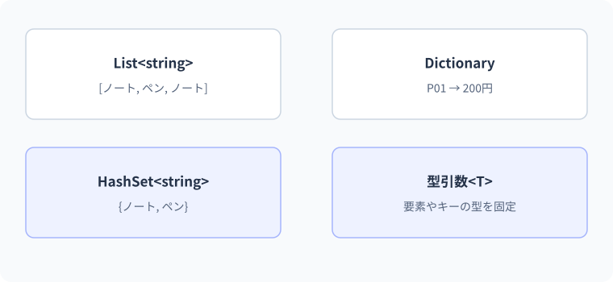

ジェネリックとコレクション
データの形とコレクション。
図解：データの形とコレクション

要点
var scores = new Dictionary<string, int>();概念・構文
コレクションを選ぶ基準は「使い慣れているか」ではなく、順番・重複・検索キー・更新方法です。List、Dictionary、HashSetを同じデータで比べ、ジェネリックが型の安全性をどこで保証するかを確認します。
Listは順序、Dictionaryはキー
List<T>は要素を順番に並べ、追加・削除できます。Dictionary<TKey,TValue>はキーから値を探す用途です。HashSet<T>は重複を避けたい集合に使います。何でもListに入れて毎回先頭から探すのではなく、アクセス方法から選びます。Listの件数はCountで、配列のLengthと異なります。
ジェネリックは型を引数にする
List<int>のintは「どの型の値を扱うか」を指定します。要素をobjectで持って取り出すたびにキャストする設計より、型の間違いをコンパイル時に検出しやすくなります。自分でもTを受け取る型やメソッドを作れます。必要に応じてwhere T : ...で制約を付けます。
存在しないキーを考える
辞書のdict[key]はキーがないと例外です。存在しないことが通常ケースならTryGetValueで分岐します。文字列キーを大文字小文字の区別なしで扱う場合は、作成時にStringComparer.OrdinalIgnoreCaseなど比較方法を指定します。DictionaryやListを複数スレッドから同時更新する場合は別途同期が必要です。
List・Dictionary・HashSetの目的
List<T>は順序を持つ可変長の並びです。添字で位置を指定でき、同じ値を複数回含められます。Dictionary<TKey,TValue>はキーから値を引く対応表です。HashSet<T>は重複のない集合で、存在するかを扱う用途に適しています。辞書や集合の列挙順を業務上の順序として頼らず、表示に順序が必要なら明示的に並べ替えます。
会員番号から会員を探すならDictionary、入力されたタグから重複を除くならHashSet、学習ログを順番に保持するならListが候補です。どの操作を頻繁に行うかも考えます。ハッシュ構造の検索は平均的に効率がよい一方で、ハッシュ衝突や比較の実装などにも影響されるため、すべての状況で一定時間と断言しません。
ジェネリックは型の関係を保持する
List<int>はintを要素として扱い、文字列をAddしようとすればコンパイルで拒否されます。List<object>に何でも入れる設計では、取り出し側で型を確認しなければなりません。型引数は単に括弧が増える記法ではなく、入力と出力の関係を保つための情報です。
T First<T>(T[] values)なら、int[]を渡すと戻り値はint、string[]ならstringとして扱えます。メソッドの中ではTが備えると保証されていないメンバーを勝手に呼べません。where T : IComparable<T>などの制約は、その操作を使える根拠を型として示すものです。必要になった段階で制約、共変・反変などC#のジェネリック仕様を段階的に学びます。
辞書の追加・上書き・未登録を分ける
dictionary.Add(key,value)は同じキーがあれば例外になります。dictionary[key]=valueは未登録なら追加、存在すれば上書きします。TryAddは追加できたかをboolで返します。データの重複をエラーにするのか、最新値で上書きするのかを仕様として決め、その意図に合うAPIを選びます。
読み取りのdictionary[key]は未登録のキーで例外になります。未登録が通常あり得るならTryGetValueで存在と値をまとめて確認します。値型の場合、失敗時のout値が既定値になることがありますが、0という値が登録されているケースと区別するため、boolの戻り値を使います。ContainsKeyの後に添字で読むより意図を一度で表せます。
比較方法と公開するコレクションの契約
"C#"と"c#"を同じキーとみなすなら、DictionaryやHashSetの作成時にStringComparer.OrdinalIgnoreCaseを指定できます。後から各呼び出しでToLowerして整える方式では、処理漏れや比較方針の不統一が生まれやすくなります。識別子の比較と、人向けの自然言語の比較は要件を分けます。
メソッドが並びを読み取るだけならIEnumerable<T>、件数と添字も必要ならIReadOnlyList<T>など、必要な操作を契約にする選択肢があります。ただし読み取り専用インターフェイスで返しても実体が絶対に不変になったわけではありません。別の参照から変更される可能性や、要素自身の変更可能性は残ります。
C#仕様の整理
| 観点 | C#での扱い | 読み方・設計上の要点 |
|---|---|---|
| 並び | List<int>など | 値型を型引数へ直接指定できる |
| 対応表 | Dictionary<TKey,TValue> | 追加・上書き・検索失敗のAPIを区別 |
| 集合 | HashSet<T> | 重複の意味を比較方法で決める |
| 制約 | where T : ... | 汎用メソッドの内部で使える操作を保証 |
文法・実例・処理順
var scores = new Dictionary<string, int>
{
["C#"] = 80,
["SQL"] = 90
};
if (scores.TryGetValue("C#", out int score))
Console.WriteLine(score);
var tags = new HashSet<string> { "C#", "SQL", "C#" };
Console.WriteLine(tags.Count);
Console.WriteLine(First(new[] { 10, 20 }));
static T First<T>(T[] values)
{
if (values.Length == 0) throw new ArgumentException("要素が必要です");
return values[0];
}想定出力
処理順
- C#というキーが存在し、scoreへ80が入る。
- HashSetでは重複したC#が1つとして扱われる。
- First<T>のTはintに推論され、先頭の10を返す。
値・状態の変化を追う
大文字小文字を無視してタグを数える
string[] inputs = { "C#", "SQL", "c#", "Python", "sql" };
var counts = new Dictionary<string, int>(StringComparer.OrdinalIgnoreCase);
foreach (string input in inputs)
{
counts.TryGetValue(input, out int current);
counts[input] = current + 1;
}
foreach (string key in counts.Keys.OrderBy(x => x, StringComparer.Ordinal))
Console.WriteLine($"{key}: {counts[key]}");出力
| 段階 | 値・状態 | 読み解き |
|---|---|---|
| C# | 未登録なのでcurrent=0、登録後1 | boolを使わず0開始するのは、この集計の仕様として意図的 |
| SQL | 同様に1 | 別キー |
| c# | 比較方法によりC#の既存値1を取得 | 同じキーとして2に更新 |
| Python・sql | Python=1、SQL=2 | 登録時のキー表記と比較方法を区別 |
| 表示 | キーを明示的にOrderBy | 辞書の列挙順へ依存しない |
よくある間違いと修正
未登録のキーを添字で読んで例外になる
修正箇所: 辞書の読み取り
修正前
var scores = new Dictionary<string, int>();
Console.WriteLine(scores["C#"]);修正後
var scores = new Dictionary<string, int>();
if (scores.TryGetValue("C#", out int score))
Console.WriteLine(score);
else
Console.WriteLine("未登録");修正後の確認
- 未登録なら未登録
- C#=0を登録すると0
- C#=80を登録すると80
実例：商品コードから価格を調べる
商品コードをキーとして価格を取得し、存在しないコードも扱います。
var prices = new Dictionary<string, int>
{
["P01"] = 200,
["P02"] = 120
};
foreach (string code in new[] { "P01", "P99" })
{
if (prices.TryGetValue(code, out int price))
Console.WriteLine($"{code}: {price}円");
else
Console.WriteLine($"{code}: 未登録");
}想定出力
P01: 200円
P99: 未登録処理と値の変化
- Dictionary<string, int>キーをstring、値をintに固定する
- P01キーがあるので200を取得する
- P99存在しないのでfalseを使って分岐する
prices["P99"]のように存在しないキーを直接参照すると、例外になります。
基礎・標準・応用演習
C#実行環境：.NET 10 SDK
基礎演習
言語名の配列{"C#", "SQL", "C#", "Python"}を重複のない集合にし、種類数3を表示します。さらに辞書から存在しない"Rust"を安全に検索してください。
開始コード
string[] languages = { "C#", "SQL", "C#", "Python" };
// HashSetとTryGetValueを使う。入力例・前提条件
4要素の文字列列に一つ重複があり、辞書には存在しないキーも検索する。
考え方のヒント
HashSetで重複を除き、辞書はTryGetValueのboolで存在を確認する。
解答例と確認ポイント
string[] languages = { "C#", "SQL", "C#", "Python" };
var unique = new HashSet<string>(languages);
Console.WriteLine(unique.Count);
var scores = new Dictionary<string, int> { ["C#"] = 80 };
Console.WriteLine(scores.TryGetValue("Rust", out int score)
? score.ToString() : "未登録");| 解答で確認する条件 | 確認方法 |
|---|---|
| 3と未登録が表示される。 | コードと想定結果を照合 |
| キーがなくてもKeyNotFoundExceptionを起こさない。 | コードと想定結果を照合 |
処理と結果の読み解き
同じC#は集合へ一度だけ入り、全体は3種類になる。辞書の不在は正常に起こり得る結果として分岐し、不正な添字アクセスへ進めない。
よくある別解と選び方
Distinctで重複を除いた列を作る方法は後のLINQで比較する。検索にはキーで取り出す意図に合うDictionaryを選ぶ。
よくある間違いと確認箇所
存在しないキーを辞書の[]で無条件に読むと例外になる。文字列の比較方式も必要に応じて明示する。
実務例：検索結果0件や未知のIDを、アプリ全体の予期しない障害と混同しない。
標準：重複登録を上書きしない
辞書へC#=80を登録後、TryAddでC#=90の追加を試します。falseと、元の値80を表示してください。
- 最初の登録と再登録を分ける
- TryAddのboolを確認する
- 添字代入なら上書きになる違いを説明する
開始コード
// 標準：重複登録を上書きしない
// 課題とテストケースを読んで、自分で実装してください。
入力例・前提条件
辞書へC#=80を登録済み。TryAddで同じキーへ90を追加する。
考え方のヒント
追加と上書きは違う操作なので、TryAddの戻り値と保存値を両方表示する。
解答例と確認ポイント
var scores = new Dictionary<string, int> { ["C#"] = 80 };
bool added = scores.TryAdd("C#", 90);
Console.WriteLine(added);
Console.WriteLine(scores["C#"]);想定出力
- TryAddは既存キーの値を上書きせず、追加できなかったことをfalseで返す。
- dictionary[key]=90とは意図が違うため、どちらを使うかをデータ更新仕様で選ぶ。
- ここでは登録済みキーを後で読むので添字アクセスの前提が成立している。
| 入力 / 条件 | 期待結果 |
|---|---|
| 同じキーで再登録 | false・80維持 |
| 新しいキーSQL | true・追加される |
| C#を添字で90へ代入 | 上書きされ90 |
処理と結果の読み解き
既存キーへの追加はfalseとなり、元の80は保持される。成功のboolだけでなく、元の状態が変わっていないことも確認する。
よくある別解と選び方
辞書のインデクサーへ代入すれば上書きになるが、重複時に保持するこの課題の契約とは違う。
よくある間違いと確認箇所
TryAddがfalseでも90へ上書きされたと思わない。Add、TryAdd、インデクサー代入の意図を分ける。
実務例：二重登録の拒否と更新を別の操作として公開すると、呼び出し側の意図が明確になる。
応用：型制約のある最大値メソッド
二つの値から大きい方を返すMax<T>を、where T:IComparable<T>で作ります。intの3と7、DateOnlyの二つの日付で使ってください。
- Tに比較操作の契約を要求する
- CompareToが0以上なら左を返す
- 日付表示は書式を明示する
開始コード
// 応用：型制約のある最大値メソッド
// 課題とテストケースを読んで、自分で実装してください。
入力例・前提条件
intの3と7、異なる二つのDateOnlyを比較する。
考え方のヒント
T同士を比較するためにIComparable<T>制約とCompareToを使う。
解答例と確認ポイント
Console.WriteLine(Max(3, 7));
DateOnly day = Max(new DateOnly(2026, 9, 14), new DateOnly(2026, 9, 21));
Console.WriteLine(day.ToString("yyyy-MM-dd", System.Globalization.CultureInfo.InvariantCulture));
static T Max<T>(T left, T right) where T : IComparable<T>
=> left.CompareTo(right) >= 0 ? left : right;想定出力
- 制約によってCompareToを呼べるとコンパイラーへ示す。
- 型が違っても比較するという共通操作の契約を利用するため、同じ処理を重複させずに済む。
- 参照型のnullを受け付ける汎用APIにする場合はnull方針も必要。この例は値型二種類へ限定して確認する。
| 入力 / 条件 | 期待結果 |
|---|---|
| 3,7 | 7 |
| 7,7 | 7 |
| 日付の前後を逆にする | 後の日付を返す |
処理と結果の読み解き
型が違っても比較結果が負・0・正という契約を利用できる。intなら7、日付なら後の日を返し、同じアルゴリズムを型安全に使う。
よくある別解と選び方
型ごとにMaxを書けば動くが処理が重複する。ジェネリックは共通の契約があるときに使う。
よくある間違いと確認箇所
制約なしにTへ>を使えると考えない。Tが提供する操作をコンパイラーへ知らせる必要がある。
実務例：再利用する部品は必要な能力だけを制約で要求し、具体型へ不要に固定しない。
確認問題
理解チェックと公式資料
- 順序・重複・キーからコレクションを選べる
- 辞書の追加と上書きを区別できる
- 比較方法をコレクションへ一貫して指定できる
- 型制約を必要な操作の保証として説明できる
公式一次情報
公式資料
確認日：2026年9月14日。本文の理解を補うための資料です。学習対象は.NET 10 / C# 14です。パッチ番号は固定しません。